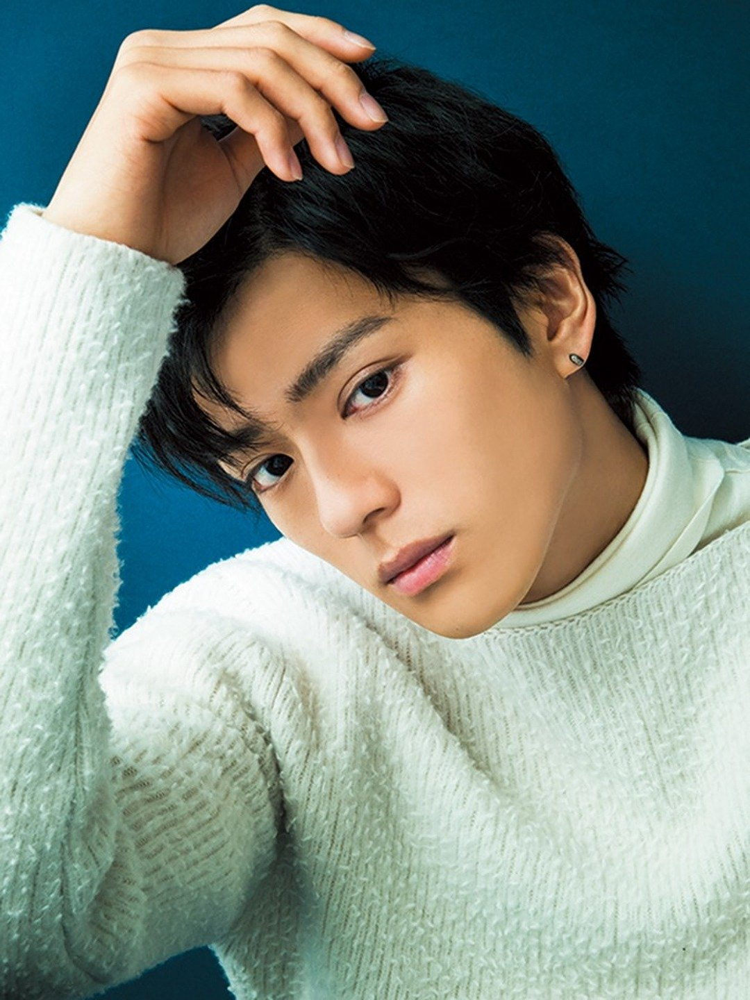

|  |
Arata Mackenya is a Japanese actor. He is son of Japanese actor, producer, director, and martial Artist Sonny Chiba. He attended Beverly Hills High Schools in their Advanced Placement Program and appeared in a few films and TV shows while growing up. He has actored in live actions movies base on manga series such as Chihayafuru, JoJo's Bizarre Adventure and Tokyo Ghoul. His debut as a voice actor was Haruto Ichihara in Ni no Kuni.
|
|---|
| |
Haruto Ichihara | Ni no Kuni | Haruto Ichihara is a popular student and a very skilled basketball player. He is best friends with Yu and dating Kotona. Haru is fun-loving confident athletic guy. He is shown to not to always think things through but he has a good heart. He is not a true believer in fantasty. |
Go Back to Main Page |
Go Back to Homepage |
|
|
|
OR |
|